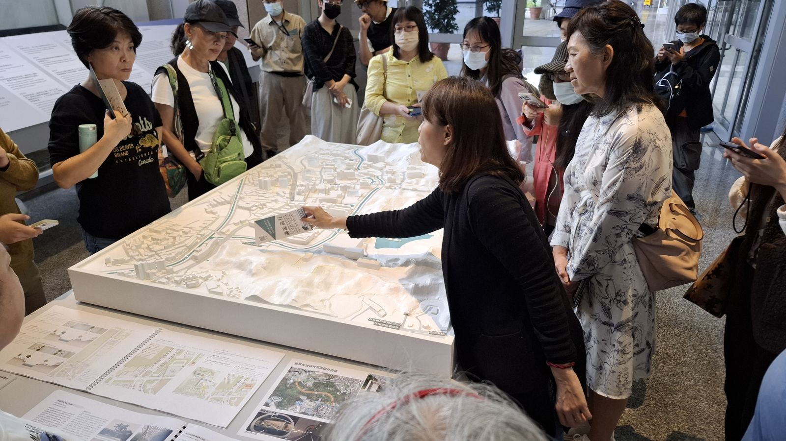

報到時會拿到一份折頁，上面是院區平面與經典建築的位置，建議整場拿在手上對照。參加下午院區導覽的人，主辦建議提早 30–40 分鐘先進展場看一圈。以下照導覽順序整理，每站附當天的照片，點圖可放大、用方向鍵切換。

中央研究院建築與院區導覽・展場導覽
「中研院可以進去嗎？是不是軍事重地？」——策展人說，她邀人來看展時常被這樣問。這場一小時的展場導覽，由策展人龔紋莎親自帶，從 1954 年的一間倉庫講起，走過基泰、王秋華、王大閎、漢寶德、李祖原，一路走到還在圖上、還沒蓋出來的院區未來。把南港院區當成一本縮小版的臺灣戰後建築史來讀。
中研院 1954 年在南港落腳，一路是「有需求就蓋房子」，蓋到院區幾乎滿了。2022 年起做了三年的全院整體規劃，先把七十年來每棟房子怎麼蓋、院區怎麼長大盤點一遍，這個展就是那次盤點的成果。策展人說，展覽像一本「索引」：拿著折頁，就能按圖索驥，去院區裡找那些藏起來的經典建築。
報到時會拿到一份折頁，上面是院區平面與經典建築的位置，建議整場拿在手上對照。參加下午院區導覽的人，主辦建議提早 30–40 分鐘先進展場看一圈。以下照導覽順序整理，每站附當天的照片，點圖可放大、用方向鍵切換。